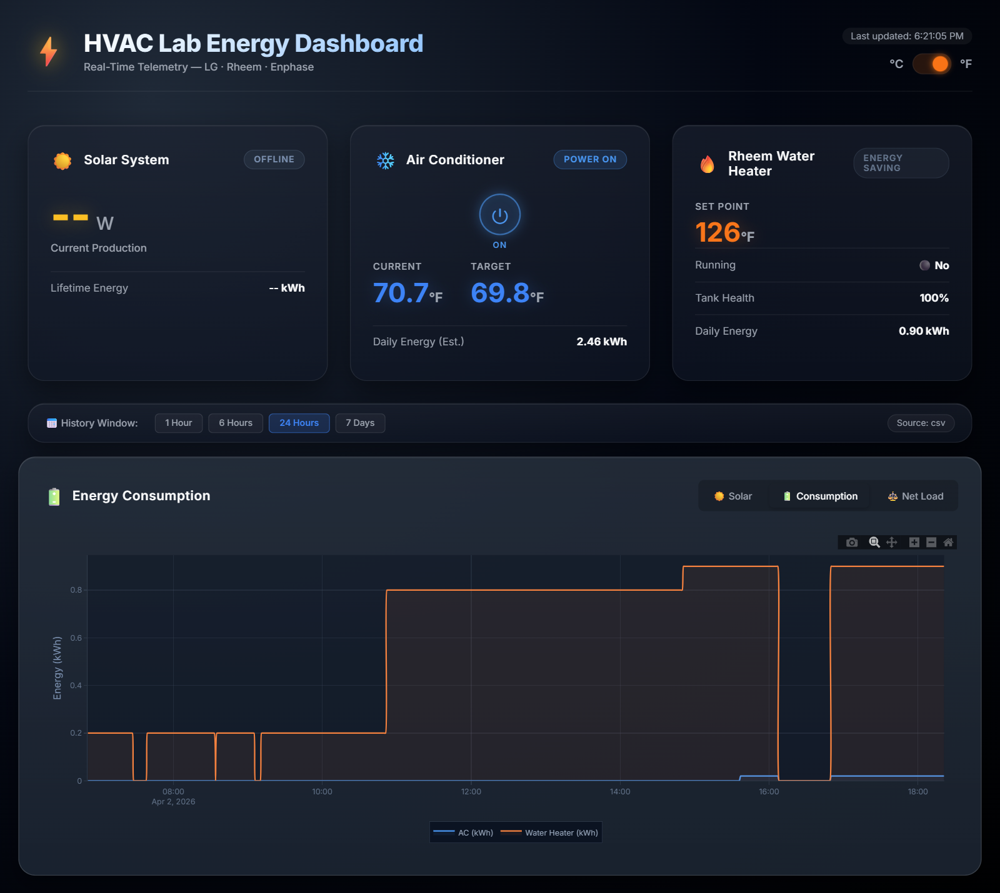

Hot-Water Heater and HVAC Data
Students connect the lab's water heater and air conditioner to software, so the lab can see, and eventually steer, how much energy they use.
- Active
- 2026–present
- Lab energy system
- Buildings
- HVAC
- Data

In plain English
Water heating and air conditioning are among the largest energy uses in many buildings, yet in a typical lab nobody sees what they consume until the utility bill arrives. This project connects the SEAR Lab's own hot-water heater and mini-split air conditioner to the manufacturers' online services, so their readings are collected automatically and set beside the lab's rooftop solar output.
Students built a small Python application that checks the equipment every minute, saves each reading to a log and draws live charts on a web dashboard, including a simple net-load figure: solar production minus heating and cooling use. Some values are still estimates rather than measurements. Air-conditioner energy, for example, is inferred from whether the unit is switched on, so the team plans to label every value as measured or estimated. The next step is two-way control: adjusting temperature set points automatically, for instance when the power grid is under strain.
Main points
- The collector reads the water heater's daily energy use and the air conditioner's on/off state and room temperature through the vendors' APIs.
- Every 60 seconds the latest readings are written to a local log and shown on a browser dashboard with live charts.
- A device the collector cannot reach shows as offline, with no number, instead of a made-up reading.
- The same application also pulls rooftop solar data, tying this work to the lab's wider energy dashboards.
- Planned next: sending set-point changes back to the equipment, the first step toward automated control.

Papers, code and materials
People
- Erick C. Jones Jr., PhD, PEPrincipal Investigator · SEAR Lab directorin
Fall 2026 team: names to be added from the lab personnel sheet. Profiles marked in link to LinkedIn. More past and present lab members are on the SEAR Lab team page.